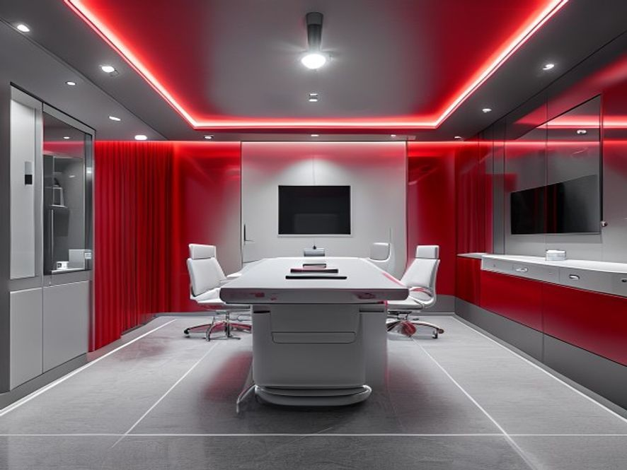

Eine Klinik. Das gesamte Spektrum der Verjüngungsmedizin.
Fünf medizinische Kompetenzfelder, die ineinandergreifen — von der Diagnose des biologischen Alters bis zur messbaren Wirkung.

Longevity-Diagnostik
Ihr biologisches Alter, epigenetische Marker und ein 360°-Gesundheitsprofil als Fundament Ihres Programms.
Mehr erfahren →
Cardiovascular Twin
Ein digitaler Zwilling Ihres Herz-Kreislauf-Systems — KI-gestützte, nicht-invasive Gefäßanalyse in Minuten.
Mehr erfahren →
IV-Infusionstherapie
Individuell rezeptierte Mikronährstoff-Infusionen in unserer privaten Lounge — für Energie, Immunität und Regeneration.
Mehr erfahren →
Regenerative Medizin
NAD⁺, hyperbare Sauerstofftherapie, Kälte-, Rotlicht- und Höhentraining — Zellregeneration auf Spitzenniveau.
Mehr erfahren →
Ästhetische Medizin
Natürliche, unaufdringliche Ästhetik — nicht-invasiv und in Harmonie mit Ihrem inneren Alter.
Mehr erfahren →
Private Membership
Ganzjährige Betreuung, priorisierte Termine und ein persönlicher Longevity-Concierge — auf Wunsch weltweit.
Mehr erfahren →